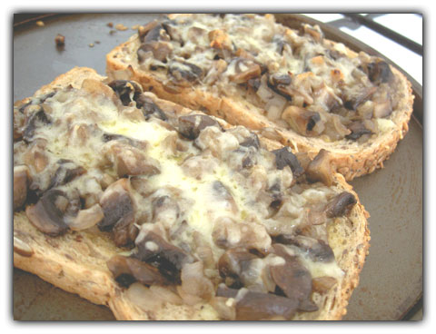

Step 4: Sprinkle this mixture fairly evenly on top of the bread, then tear over big pieces of the scamorza. Give the whole lot one final drizzle of olive oil, and put it in the oven to bake for about 30 minutes, until the mushrooms are beginning to crisp up and the cheese is melted, bubbling and starting to brown.
